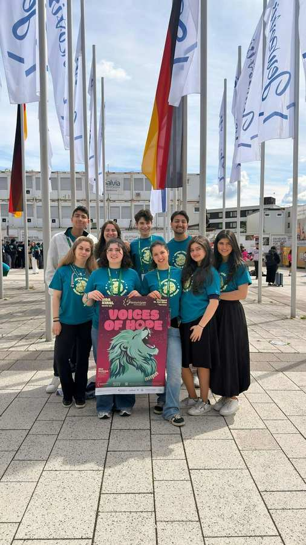
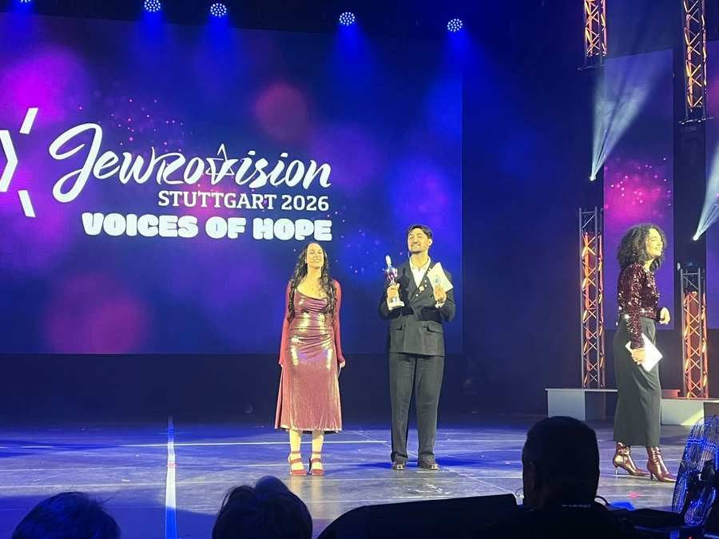
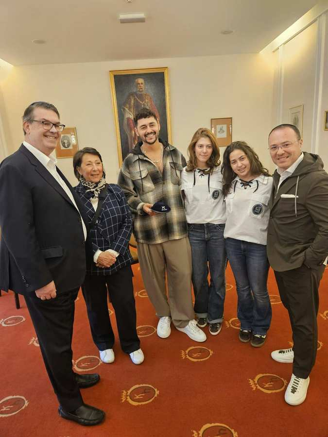

Jewrovision 2026 – Stimmen der Hoffnung
„Voices of Hope“ – Stimmen der Hoffnung – war das Motto der diesjährigen Jewrovision 2026. Über 1.300 Jugendliche aus ganz Deutschland kamen nach Stuttgart, um Teil des größten jüdischen Gesangs- und Tanzwettbewerbs Europas zu sein und ihre auftretenden Gruppen mit Begeisterung zu unterstützen. Zum ersten Mal nahm auch eine kleine Delegation der JUKO aus Wien an der Jewrovision teil.

Gerade in Zeiten, die alles andere als einfach sind, zeigen junge Menschen, wie wichtig Zusammenhalt, Hoffnung und Gemeinschaft sind. Die Jugendlichen waren laut, lebendig, kreativ und voller Freude – ein starkes gemeinsames Zeichen: „Wir sind da!“
Die Jewrovision wird vom Zentralrat der Juden in Deutschland organisiert und ist mit über 1.300 Jugendlichen aus rund 60 jüdischen Jugendzentren und dem größten jährlichen Event jüdischer Gemeinden in Deutschland sowie dem größten jüdischen Gesangs- und Tanzwettbewerb Europas. Jahr für Jahr begeisterte die Veranstaltung mit beeindruckenden Auftritten, hochprofessionellen Bühnenshows und engagierten Jugendlichen, die monatelang auf diesen besonderen Moment hingearbeitet haben. Bewertet wurden die Performances von einer hochkarätigen Jury aus bekannten Persönlichkeiten aus Film, Musik und Politik.
Ein besonderes Highlight für unsere Gruppe war auch die Moderation der Veranstaltung: Aviel Ustoniazov aus der JUKO-Abteilung führte gemeinsam mit zwei Kolleginnen aus Deutschland durch das Programm. Mit viel Charme, Professionalität und Bühnenpräsenz meisterte er diese Aufgabe hervorragend und repräsentierte unsere Gemeinde auf beeindruckende Weise.
Neben den Shows bot die Jewrovision auch ein vielfältiges Rahmenprogramm. Die Jugendlichen konnten aus zahlreichen Workshops und Ausflügen wählen – von Musikproduktion über Muay Thai bis hin zu Workshops zum gemeinsamen Engagement gegen Antisemitismus. So entstand nicht nur Raum für Kreativität und Austausch, sondern auch für neue Freundschaften und inspirierende Begegnungen. Begleitet und betreut wurde unsere Gruppe von der Vorsitzenden der Jugendkommission, Beatrice Kricheli, die die Jugendlichen während der gesamten Reise unterstützte.

Die Eindrücke der Jewrovision haben unsere Jugendlichen besonders inspiriert und motiviert. Als großes Vorbild für den Jew Factor zeigte die Veranstaltung eindrucksvoll, wie viel durch Kreativität, Teamgeist und Engagement möglich ist. Mit vielen neuen Ideen und großer Begeisterung blickt die JUKO nun bereits auf den Jew Factor 2027 – mit dem Ziel, ihn noch größer und spektakulärer zu gestalten.
Für unsere Jugendlichen war die Teilnahme an der Jewrovision eine unvergessliche Erfahrung. Sie hat motiviert, gezeigt, was durch Engagement und Teamgeist möglich ist, und unsere Gruppe noch enger zusammengeschweißt. Ein großes DANKE gilt allen, die diese Reise möglich gemacht und unsere Jugendlichen unterstützt haben.
Während unsere kleine JUKO-Delegation in Stuttgart bei der Jewrovision dabei war, gab es auch einen besonderen Moment in Wien: Gemeinsam mit zwei Gewinnerinnen des Jew Factor – dem Song Contest unserer Gemeinde – trafen IKG-Präsident Oskar Deutsch sowie IKG-Vizepräsidentin Claudia Prutscher und IKG-Vizepräsident Michael Galibov den den israelischen ESC-Act Noam Bettan. Dort überreichten ihm die beiden jungen Gemeindemitglieder Glücksbringer aus Wien für das Eurovision-Song-Contest-Finale.
Kol Hakavod, Noam Bettan!
Fotos: JUKO